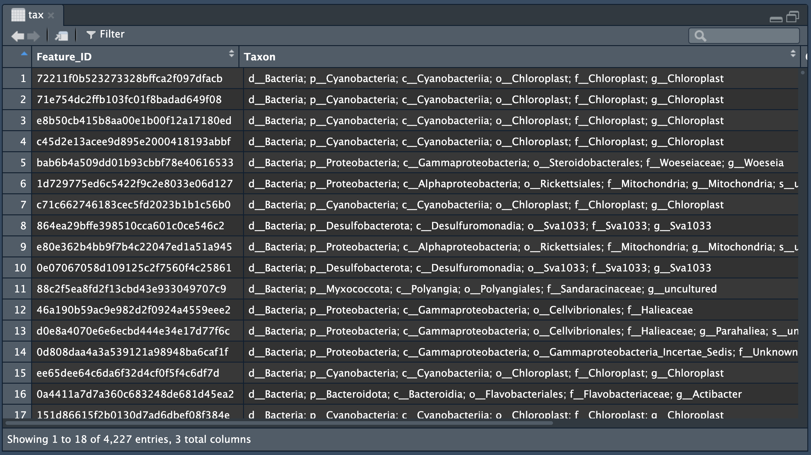
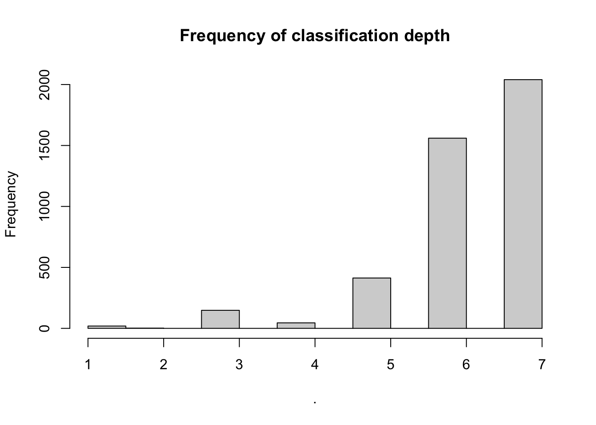

It’s a good day when the data you receive is in the exact format you need for your analysis. Much more frequently, you will need to carry out some form of data tidying. Data tidying is a general term to describe things like renaming columns, removing rows with missing data, or combining data from different files. This episode will focus on string manipulation - combining, removing, or renaming strings of characters. The next episode will focus on integrating data from different files.
An example of string manipulation
Let’s look at some example data to demonstrate what we are going to try and do today:

Taxon column in the tax object
In this file individual rows represent sequences which have been assigned a taxonomic lineage. The Taxon column is not particularly human readable right now, but let’s say we wanted to modify this into something shorter and cleaner that we could then use as figure labels (e.g., convert row 1 to read “Bacteria, Cyanobacteria”).
If this was a single row, we would probably do this in excel - but since there are more than 4,000 rows, we want to automate this process. This type of string manipulation is very powerful and is something you can expect to regularly carry out in your data analysis career.
Regular expressions
Before we look at the functions we will use for string manipulation we need to introduce regular expressions (called regex or regexp). Regex are a set of rules and keys that we can use to describe patterns that we want to match or manipulate. One example of this type of rule or key is the concept of the wildcard - a symbol that matches to any value (e.g., if I have files labelled “Sample_A”, “Sample_B”, “Sample_C”, then “Sample_wildcard” would match to all of the samples). Regex has a whole series of symbols that can be used in combination to define patterns. Here is a more complex example:
[0-9]+.*_(log|chk)\.txt
The regex above is probaby nonsensical to you. It might help to split it into the rules (symbols like the wildcard that are meaning something in the regex language) and the arguments (the patterns we are trying to match to):
[0-9]+.**_(log|chk)\.txt*
Now we can read the arguments from left to right:
[0-9] : The square brackets are symbols that specify a range - in this case, any number from 0 - 9. We could also use [a-e] to match any letters from a-e, or [DGT] to match any of the letters D, G, or T. You can think of values inside of square brackets as being very limited wildcards which will only replace a certain characters.
: The “+” is a modifier, which can be read as “match the preceeding pattern one or more times”. The addition of the “+” symbol changes the regex from matching 0, or 1, or 5 (single digits only), to matching 0, or 10, or 55555593939483829.
. : The “.” is the regex wildcard. This matches any character. An example use of this is when you have a mix of column names like “Sample_1”, “Sample.1”,“Sample-1”.
* : The “*” is another modifier, but this time it matches the preceeding pattern zero or more times.
_ : This is an _ (i.e., we know that the string has something_something).
(log|chk) : There are two separate rules here. The () indicates that the patterns inside must be interpreted as words, while the “|” means “or”. Together, this means “match to the word log or the word chk”.
\. : The “\” is known as “escape”, and we use it when we need to specify a “.” or an “*” (so that they are interpreted as characters, rather than rules that modify the regex).
txt : A set of characters.
Exercise: Can you read the regex? Use regular language to describe the type of pattern we are matching. Give one example of a pattern that the regex would match to, then give a different pattern.
Reading the regex
All together, this regex is looking for a file that starts with one or more digits, maybe (or maybe not) some other type of characters, an underscore, the word log or chk, ending in .txt.
Exercise: Write a regex pattern that will match the following cases:
You have received samples with two different formats: “Sample1_A” or “SampleA_1”. There are five samples, each with an A or B type. Write a regex pattern that will match with all possible sample names.
Now imagine that there are many more samples, but we only want to match with the first five.
Reading the regex
Sample._. would capture all possible combinations with single characters (e.g., samples 0-9), and would also pull out anything with errors (e.g., Sample?_+). Sample[1-5|AB]_[1-5|AB] would capture only samples 1-5.
Wrangling taxonomy
Here we will work with our example files with the aim to take the current taxonomy data and convert it into something more human readable.
Setup R environment
source("setup.R")
Loading required package: permute
Loading required package: lattice
Attaching package: 'dplyr'
The following objects are masked from 'package:stats':
filter, lag
The following objects are masked from 'package:base':
intersect, setdiff, setequal, union
Obtaining microbial taxonomy from DNA sequences
A major aim of microbial ecology is the identification of populations across an environment. We do that by sequencing the amplicon of the 16S small subunit ribosomal RNA gene, the standard taxonomic marker. Then, sequences are clustered based on sequence similarity (to reduce redundancy and improve computational efficiency) and then assigned a taxonomic lineage using a classifier that compares our sequence data with those in a reference database (popular options are SILVA and Greengenes 2). Depending on how similar and well-represented the sampled sequences are to those in the database, our sequences will be assigned names and ranks ranging from domain to species.
Inspecting taxonomy
First, we will look at our current taxonomy field and familiarise ourselves with the data.
library(tidyverse)
── Attaching core tidyverse packages ──────────────────────── tidyverse 2.0.0 ──
✔ forcats 1.0.0 ✔ readr 2.1.5
✔ lubridate 1.9.4
── Conflicts ────────────────────────────────────────── tidyverse_conflicts() ──
✖ dplyr::filter() masks stats::filter()
✖ dplyr::lag() masks stats::lag()
ℹ Use the conflicted package (<http://conflicted.r-lib.org/>) to force all conflicts to become errors
We can see that for each row we have a sequence which has a classification going down through one or more ranks (domain, phylum, class etc.,). Each rank begins with a single-letter prefix followed by “__“. Ranks are separated by a semicolon (”;“). Importantly, ranks are unevenly assigned - some are identified down to the species level, while some are only classified to the level of phylum.
Pattern detection and extraction with the str_ family of functions
Now that we have an understanding of regex and we know what our data looks like, we can use functions that will take regex and match to patterns within our data. There is a family of functions that all begin with str_ (e.g., such as str_detect, str_count, str_subset) which will can be used to do many different tasks.
We will use functions to answer two questions:
How well characterised are our sequences? i.e., what proportion of our sequences are classified down to the level of species?
Did we manage to retrieve biologically important taxa? (for this example, we will select some taxa for further investigation)
1. How well characterised are our sequences?
How many sequences were classified at each taxonomic rank (species, genus, family, order, class, phylum)? If there are large numbers of sequences that were only identified at higher taxonomic ranks, the system we are studying may harbour lots of novel microbial populations.
To answer this question we will start with the str_detect() function. str_detect() takes a regex pattern as input and will return a set of TRUE/FALSE values for each element (in our case, each sequence that has a taxonomic classification) depending on whether the pattern is present/absent.
str_detect(tax$Taxon, "s__") %>%# s__ indicates a species classificationsum() # sum() will count the number of "TRUE" results
[1] 2040
This tells us that of the 4,220 sequences with a taxonomic classification, 2040 were classified to the level of species (“s__“).
Most of the functions in the str_ family follow the same format:
Remember that str_detect() works by testing each element (here, each individual row from tax in the form of a vector). If we wanted to count how many times a string appears within each element, we can use str_count():
str_count(tax$Taxon, "__") %>%head(n =20) # Shows the number of classification levels for the first 20 elements
[1] 6 6 6 6 6 7 6 6 7 6 6 5 7 6 6 6 6 7 6 7
str_count(tax$Taxon, "__") %>%hist(main ="Frequency of classification depth")

We can see that the majority of the sequences are classified to the level of species or genus.
2. Did we retrieve biologically important taxa?
For this episode we will focus on species that contribute to the removal of nitrogen from the ecosystem (the act of denitrification). This is usually performed by prokaryotes spanning the Bacterial and Archaeal domains. Their metabolic activity ensures that excess nitrogen is removed in gaseous form and thus prevents eutrophication. The starting substrate for denitrification is nitrate. Thus, reduced nitrogen must first be oxidised via nitrification. Two communities are involved in the conversion from reduced to oxidised nitrogen:
Ammonia oxidisers (usually has the prefix “Nitroso” in their taxonomy)
Nitrite oxidisers (usually has the prefix “Nitro” in their taxonomy)
We will use the str_subset() function to pull out all rows with “Nitro” in their taxonomy, then we will use the str_replace() function and a complex regex statement to replace the long and complex taxonomy name with something clear and easy to read.
There are 102 sequences assigned to a taxonomy with “Nitro”.
Now we will use the str_replace() function to replace the long taxonomic classification with only the name of the domain and the deepest classification containing the word “Nitro”.
To understand str_replace() we are going to need to introduce two new rules (in addition to the [], “.”, “+”, rules from earlier):
^ : when the caret (“^”) is used inside square brackets, it means “Not this”. Therefore [^;] means “match anything except the semicolon”.
() and \1 : when using str_replace we use () to highlight regions we want to replace. Whatever is within the () will be captured and ‘saved’ for later. We can save multiple strings. The “\1” says “return the first string we saved earlier”.
d__([^;]+); looks for the sub-string d__ followed by anything that is not a semicolon [^;]+ more than once. The regex [^<some_pattern>] means to match anything that is NOT . The round brackets () “captures” or “saves” the matches within it for replacement. This is followed by a semicolon (our rank separator) which is not captured but is present in the vector.
.(Nitro[a-z]+). As we do not know at which rank the first instance of “Nitro” will appear, the regex .* will match anything . more than 0 times *. At the first “Nitro” it encounters, we will also look for any subsequent letters in small case ranging from ‘a’ to ‘z’ as represented by Nitro[a-z]+. Anything after that can be matched but is not captured.
The last argument in the function specifies how the replacement string should look like. \1, \2 replaces the output with the two patterns we captured separated by a comma and a space. Patterns are captured sequentially and must be referenced in the order which they appear in the original string. Therefore, if we wanted the “Nitro” part to be in front, we would reverse the order to \2, \1.
Compare the output with the output from nitro %>% head() to grasp how this works.
Exercise: Do you notice anything that is different from what you expected?
Being greedy
It is very reasonable to expect the pattern to return the first match (in our example, that would be “Nitrospirota”). Instead, it has returned Nitrospira - the last match!
This is explained by thinking of “.*” as being greedy. It will match as much as possible, while still allowing the rest of the pattern to match. In other words, we get the last possible case of Nitro captured, and all other cases are consumed by the greedy .*.